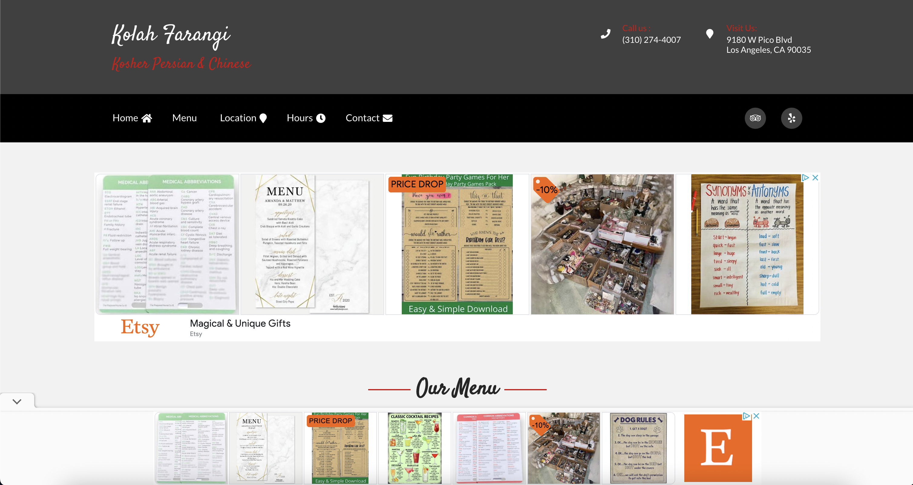

I chose the Kolah Farangi website because not only are Kosher restaurants
already hard to find, but there are extra and unnecessary hoops to jump through once the website is reached.
Here is the link to the original website.
Issues:
Usability
- There are excessive ads all over the website. They are distracting and unhelpful,
and they also make the website seem less credible.
- The menu is composed of blurry photos. This means that if a user would like to look
closer at a particular section in order to read it, they would have to click on the image
and be taken through another path, sometimes getting another ad.
-
The heading is very hard to read due to the choice of background and text color.
Learnability
- The user has to actively search for the menu due to the fact that they are images in a
sea of other images and ads. The clicking action is also unintuitive.
This is an unnecessary learning curve.
Memorability
- The white/black/red color scheme is not applied in the menu. The obscene
amount of ads also obscures the menu and the website itself, so not much
is memorable about the webstie besides its distracting interface.
Accessibility
- When using WebAIM WAVE to find accessibility issues, I found that
there was no alternate text for images and also low contrast. I agree with these issues.
Since the menu is a set of images, those who use a screen-reader are unable to read
the menu. Additionally, the red against the gray in the header is very difficult to read.
Here is the link to my redesign.